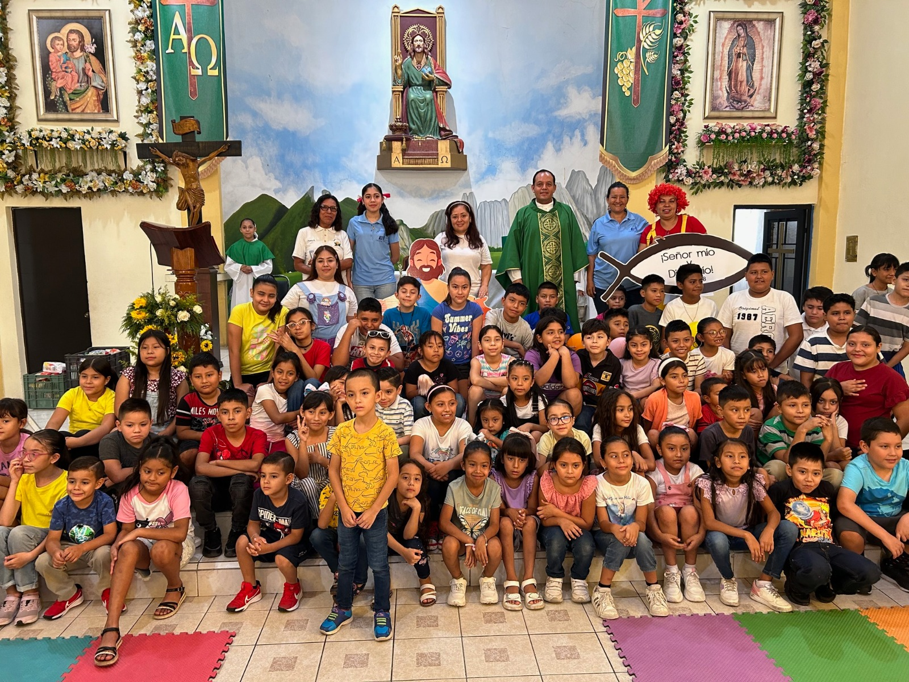
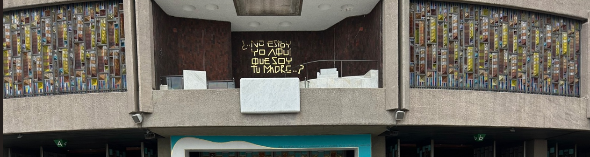
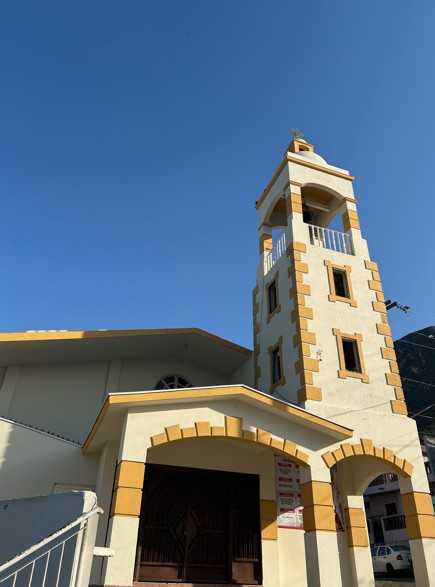
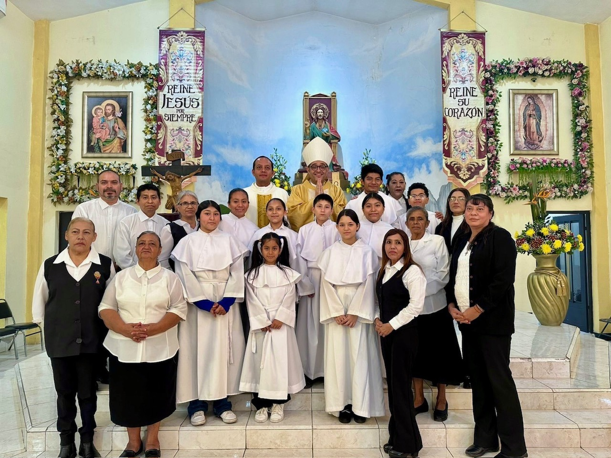
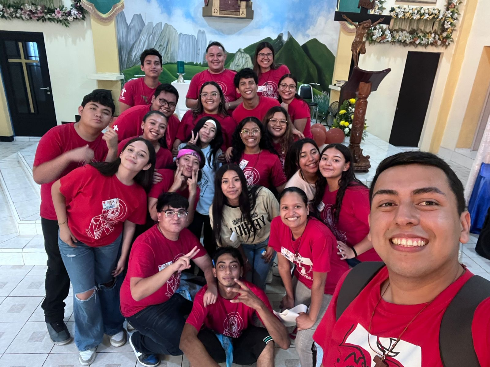
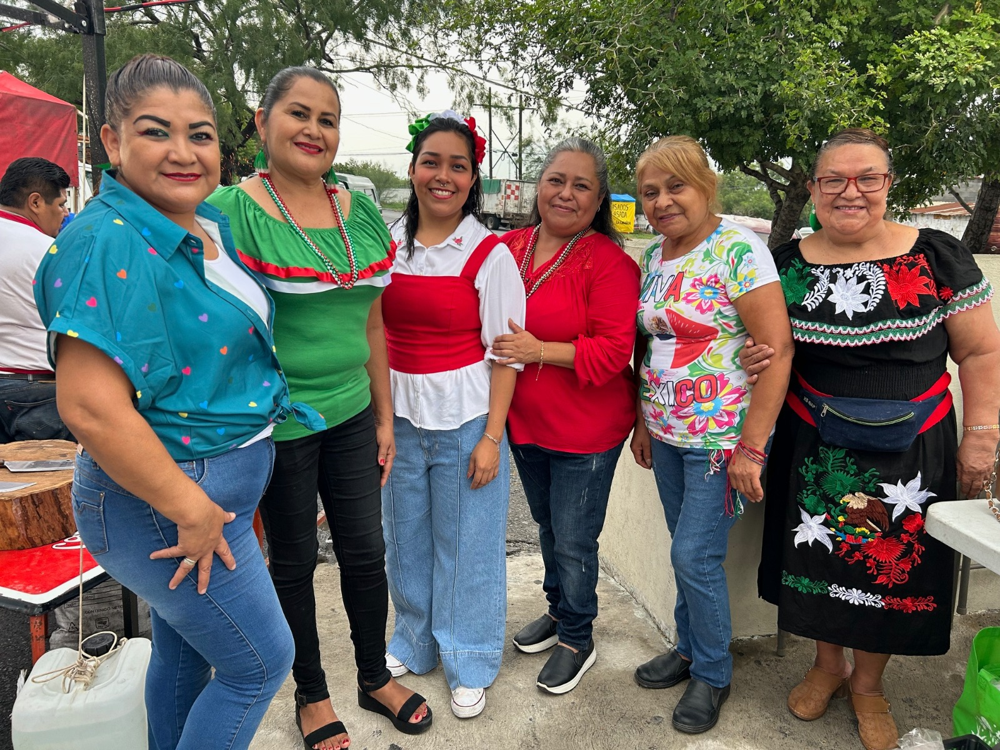
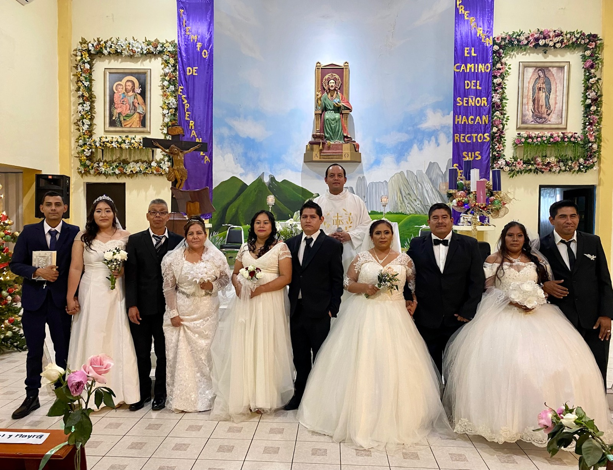
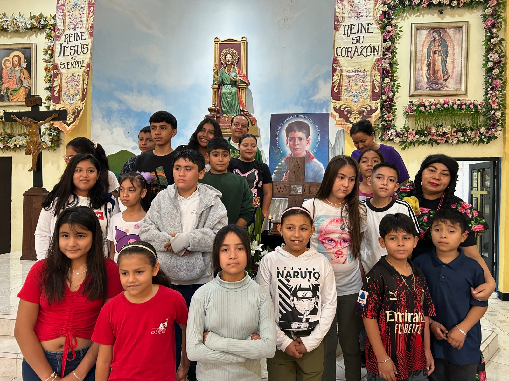
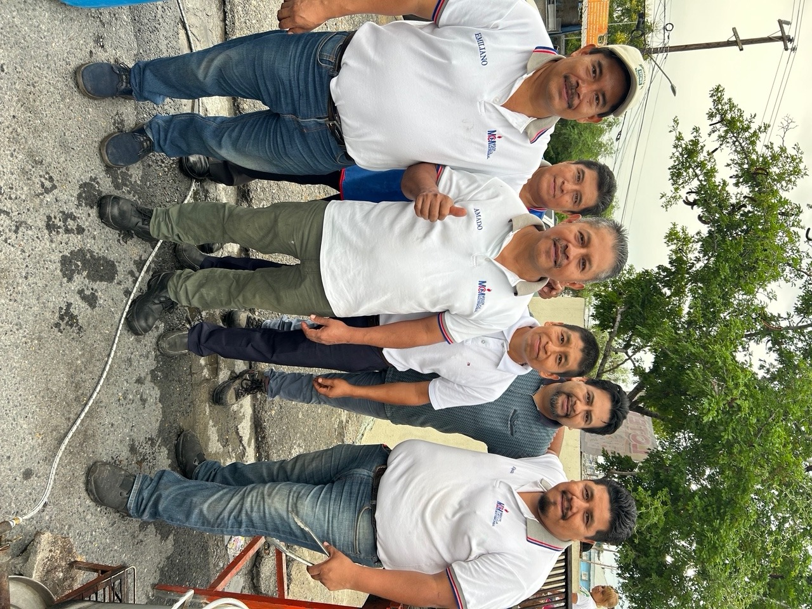

"Vengan a mí todos ustedes que están cansados y agobiados, y yo les daré descanso."
— Mateo 11:28

Acompañamos a nuestra comunidad en cada etapa de su vida cristiana. Acércate a la oficina para agendar o solicitar información.
Pláticas pre-bautismales el segundo sábado del mes. Ceremonias comunitarias los domingos.
Trámite con 6 meses de anticipación. Entrevistas con el párroco previa cita.
Disponible para visitas domiciliarias u hospitales. Llamar a oficina para urgencias.
La Parroquia de Cristo Rey fue erigida canónicamente por el Sr. Arzobispo Adolfo Cardenal Suárez Rivera (+) el 21 de noviembre de 1998. Este importante acontecimiento marcó el inicio de una nueva comunidad de fe en la región, consolidándose como un faro espiritual para las familias del sector.
Nuestra comunidad forma parte del Decanato de Nuestra Señora de la Soledad, perteneciente a la Zona Pastoral VIII. No somos solo un edificio de culto, sino un punto de encuentro vivo donde se ofrecen servicios pastorales, celebraciones litúrgicas y programas de formación integral.
Con el paso de los años, Cristo Rey se ha convertido en un referente espiritual, atendiendo las necesidades de los fieles y promoviendo los valores del Evangelio.

Descubre los grupos donde puedes servir, convivir y crecer espiritualmente.






Si necesitas información sobre sacramentos, horarios o atención parroquial, puedes comunicarte con nosotros o visitarnos en oficina.

Nuestro equipo parroquial puede orientarte en bautismos, matrimonios, pláticas, celebraciones especiales y acompañamiento espiritual.
Av. Platino #1280 Col. Pedregal del Topochico CP 66061 Gral. Escobedo, N.L.
Lunes a viernes de 9:00 AM a 1:00 PM y de 4:00 PM a 7:00 PM
(52) 8183848009
administracion@pcristoreyesc.com